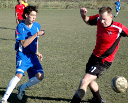
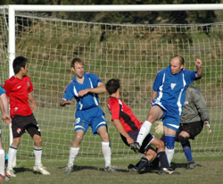
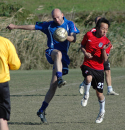
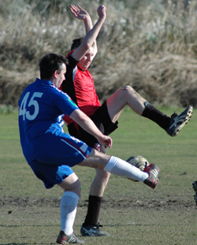

|
Misato, Sun 12th Nov. A very windy and slightly chilly afternoon was the setting for this crunch game between 2 teams which like to battle it out. Last season was a 1-0 defeat for the Vags against the same opposition so it was important to avenge that loss which had Vags endure a lousy season from that game onwards.
A brand new kit was enough to put a smile on everyone`s face, not to mention the extra skip in our step. Vags were changed since their last game (3-1 vs YCAC2nds). The loss of boys Graeme, Brian, Maz, Lyndsey etc allowed for the returns of Ian, Patrick, Gary and Chris into the team.
From the kick-off both teams found it difficult to keep hold of the ball in the wind. Vags playing against it however made the first real effort on goal. I think a throw from Tom, in-line with the edge of the 18 yard box, looped over their defender only for James to chest down and hit an always rising shot over the keepers upright. Next it was Alex`s turn to have a pop and a speedy run and cut inside from the left brought him one-on-one with the keeper but it was a combination of poor finishing and good goalkeeping which snuffed out the chance.
From that I think Vags stepped up the level of play and some brilliant skill on the edge of the box from Alex allowed him to wriggle past 2 defenders and square a ball in for the ever grateful Wayne to pass into the net and accept a wallop from the goalkeeper for his efforts. Players celebrated while Wayne dusted himself off and met the rest of his team mates back in their half for the re-start. Sorry Wayne, didn’t think you were that hurt! 1-0
After the re-start AFC tool control for a good 5 minute spell but with the Vags defence reducing them to pop shots from 25 yards they were going to find the American number 1 difficult to beat. However, one shot which did make its way on target and looking comfy for Taylor to collect took an almighty bobble infront of him and he was excellent in re-acting to what would have been a cruel goal on the Vags boys. Well-in Taylor!
Vags then pushed on to look for some comfort in another goal and it came the way of young starlet Alex. Already on 4 goals in 3 games this season, he was as hungry as ever. Some smart passing around the Vags area finally broke to James just in-side his own half and despite shouts from Ian to square it he noticed Alex lurking on the backs of the AFC defence. Knowing the pace he has, James sent a 25 yard pass with the outside of the boot along the ground for Alex to run onto. The AFC keeper was in 2 minds whether or not to come for it and when he finally did Alex had already picked his spot, curling a beauty from 20 yards. 2-0!! Must not forget to add Patrick`s effort of letting fly with a stonker of a shot from just inside the box, which came back off the bar and off into the wind. That came from some neat play between Alex, James and Patrick on the left wing. Vags looked comfortable in each position with everyone winning their individual battles over the pitch and continued to show some new found confidence installed by the new head-coach Richard.
The 2nd half was supposed to be more of the same if not better as we played with the wind against our backs but few chances came and the team looked different to the one full of creativity in the first. Infact I think it was our only chance of the 2nd period which made it 3-0. James released down the right this time and he neatly jinked past 1 defender allowing him enough space to squeeze a cross back into Alex whose shot from 6 yards was blocked well at first but it broke kindly for him and allowed him to take a touch and guide it past their despairing goalkeeper. 3-0!
Vags are still looking for a clean sheet and the defence and Goalkeeper deserved one after some rock solid stuff at the back. One chance I remember being snuffed out by Ged who charged like a bull and timed a perfect sliding tackle on the edge of the box to win the ball back and flatten their striker with 10 minutes remaining. But the clean sheet was never to be unfortunately. A clumsy challenge with 5 minutes remaining on the corner of the 18-yard box gave AFC an INDIRECT free-kick. Their boy stepped up and clipped the ball towards goal where it was going exactly with no touches being made by any of their or our players. Screams from Richard on the touch line “Don’t f..kin touch it!!” were in vain as Taylor didn’t want anything going past him and he threw a punch but the ball only trickled to their defender on the inside the box and he hit the ball low and hard and it made its way through Taylor`s welcoming legs for a consolation. 3-1
All in all, another decent performance and a 3-1 win. We know we can play better and must do if we are to continue this unbelievable winning streak.
Report by Muzzy
|